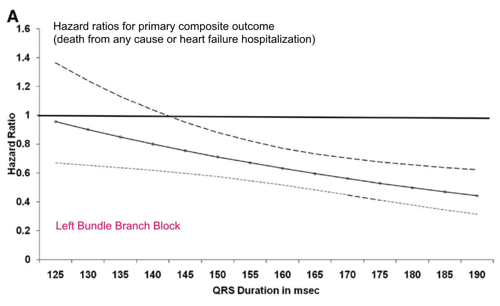
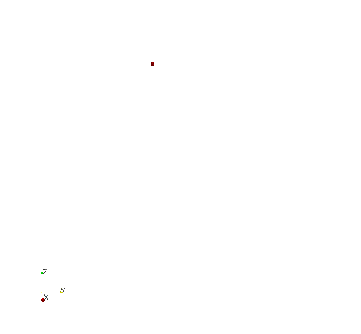

His Bundle
Pacing
is a must
is preferred over CRT
for heart block with decreased LVEF
(or even with normal EF).
HeartRhythmBox
•
•
turn on pointer
01
13
Only His bundle pacing is able to provide physiological pacing.
Br J Cardiol 2018.
•
•
turn on pointer
02
13
ECG Characteristics of His Bundle Pacing
Vijayaraman et al. Heart Rhythm 2018.
•
•
turn on pointer
03
13
Can we pace Bundle of His
in heart block?
•
•
turn on pointer
04
13
The conduction system is perfectly designed.
AE Teng. J Electrocardiol 2016.
In complete heart block, the block mostly remains within the bundle of His.
Vijayaraman P. J Electrocardiol 2016.
84%
of patients with complete or advanced AVB, regardless of the location of block, underwent successful permanent HBP.
Vijayaraman P. JACC EP 2015.
The conduction system is perfectly designed.
AE Teng. J Electrocardiol 2016.
In complete heart block, the block mostly remains within the bundle of His.
Vijayaraman P. J Electrocardiol 2016.
84%
of patients with complete or advanced AVB, regardless of the location of block, underwent successful permanent HBP.
93%
of patients with block at
Nodal level
underwent successful permanent HBP.
76%
of patients with block at
Infranodal level
underwent successful permanent HBP.
Vijayaraman P. JACC EP 2015.
•
•
turn on pointer
05
13
CRT is a proven therapy ...BUT...
Dyssynchrony has to be bad enough.
LV function has to be poor enough.
Dyssynchrony has to be bad enough.

Impact of QRS Morphology and Duration on Outcomes After CRT. Results From RAFT.
LV function has to be poor enough.
Benefits of CRT over RV pacing in patients with AV block with near normal LVEF is
UNCLEAR.
BIOPACE Preliminary Results
•
•
turn on pointer
06
13
CRT is potentially PRO-ARRHYTHMIC.
Epicardial pacing reverses the normal activation sequence.
Circulation 2003.
...and may cause polymorphic VT.
...and may increase risk of sudden cardiac death during the early stage.
COMPANION Subanalysis. Circulation 2006.
Epicardial pacing reverses the normal activation sequence leading to prolongation of QT, JT, and transmural dispersion of repolarization (TDR).
Circulation 2003.
&
Biophysical Journal 2010.
...and may cause polymorphic VT.
...and may increase risk of sudden cardiac death during the early stage.
COMPANION Subanalysis. Circulation 2006.
•
•
turn on pointer
07
13
vs. RV pacing
His Bundle Pacing (HBP) Success rate = 92%
RV thresholds were significantly higher in HBP group (1.3V @ 0.8ms) vs. those in RV pacing group (0.6V @ 0.5ms).
The benefits were observed more in those with RV pacing>20%.
JACC 2018.
•
•
turn on pointer
08
13
in RBBB
In patients with RBBB and reduced LVEF, His bundle pacing was associated with with significant narrowing QRS duration and improvement in LVEF at 1 year f/u.
Circulation EP 2018.
•
•
turn on pointer
09
13
vs CRT in HF with LBBB.
His resynchronization delivers better ventricular resynchronization, and greater improvement in hemodynamic parameters, than biventricular pacing.
JACC 2018.
•
•
turn on pointer
10
13
as an alternative to CRT.
His Bundle Pacing may be considered as a rescue strategy for failed BiV Pacing and may be a reasonable primary alternative to BiV Pacing for CRT.
Heart Rhythm 2018.
•
•
turn on pointer
11
13
Long Term
At 3-year follow up, His bundle pacing improved LVEF, LVESV, and NYHA class in HF with LBBB.
Heart 2019.
•
•
turn on pointer
12
13
Arguments Against His Bundle Pacing
Limited Data
HBP is still in the early stage.
There is more data to come.
High Threshold
It's about the equipment NOT the concept.
It will get better with time. Remember CRT?
Not feasible in advanced conduction diseases.
What would have work in those with advanced conduction disease?
CRT may provide ventricular capture but likely not ventricular synchronization.
•
•
turn on pointer
13
13
His Bundle Pacing is the new way to
PACE
.

CoMMLab University of Valencia
BECAUSE
IT'S
PHYSIOLOGIC.
BECAUSE
IT'S
PHYSIOLOGIC.
HeartRhythmBox: Main Page
●
⇑ to top
●
FB: @HeartRhythmBox